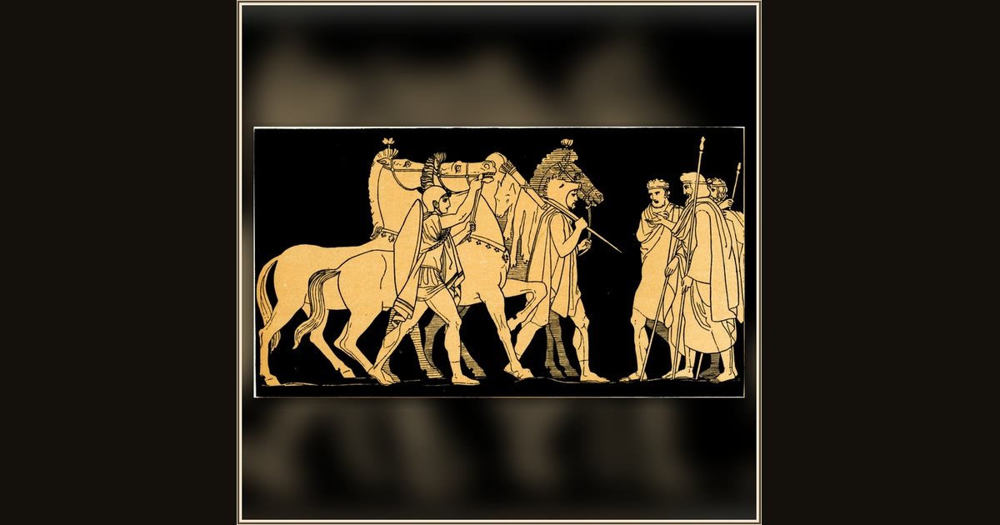

Diomed and Ulysses returning with the spoils of Rhesus
John Flaxman (illustrator); Alfred John Church (1895 book author) · 1895 · Wikimedia Commons
Odysseus and Diomedes return with the captured horses, and Nestor asks how they got them (10.540–545). Flaxman draws their return. Explore its place in Homer's Iliad, Book X, line 545.